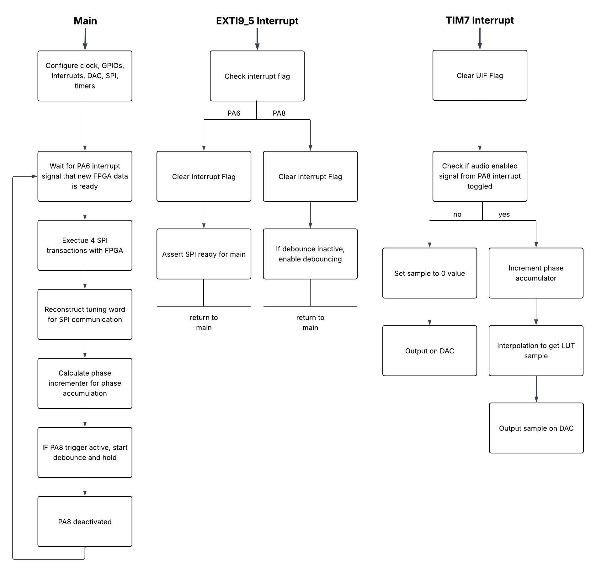

MCU Design
Within the system the MCU is responsible for converting the tuning words sent from the FPGA into real time audio output using direct digital synthesis (DDS) and the digital to analog converter. To run this pipeline reliably, the MCU runs three coordinated blocks of logic: the main execution loop, an external interrupt handler that responds to FPGA signals and a timer interrupt that drives the audio sampling rate. These three subsystems within the MCU interface to ensure new tuning data is captured as soon as it becomes available such that the DAC outputs smooth and continuous sine waves at the correct frequency. This system is described by the following diagram.

Main Loop Operation
The main loop begins by configuring the system clock, GPIO pins, external interrupts, the SPI interface, the DAC, and the timers required for DDS. After initialization, the MCU waits for an interrupt on PA6, which the FPGA asserts whenever a fresh set of tuning data is ready. When that interrupt occurs, the MCU performs four SPI transactions to retrieve the full tuning word from the FPGA.
Once the MCU reconstructs the 32-bit tuning word from four 8-bit packages it shifts the values into the appropriate range and maps to the 200-2000 Hz output frequency span. The mapped frequency then computes the corresponding phase increment value used by the DDS phase accumulator. The phase increment is calculated once per tuning-word update and is stored in a global variable for real-time interrupt use. This value determines how quickly the MCU will step through the sine LUT and therefore sets the output tone’s frequency. If the trigger signal on PA8 is detected as active, the MCU initiates a short debounce-and-hold period to ensure the system doesn’t retrigger unintentionally.
EXTI9_5 Interrupt Handler
The EXTI9_5 interrupt is shared by PA6 “done” signal from the FPGA and PA8 “trigger” signal. The MCU branches depending on which pin is fired. For PA6, the FPGA ready signal, the interrupt handler clears the interrupt flag and notifies the main loop that the SPI transfer can begin. If PA8 fires, on a clean falling edge from the scanner trigger input, the handler clears the interrupt and checks whether a debounce sequence has been activated. If not, it begins debouncing to prevent false activations caused by noisy mechanical switch transitions. Both interrupt paths immediately return to the main loop ensuring the system remains responsive. In essence the EXTI9_t Interrupt handler serves as an event detector triggering time consuming tasks in the main loop.
TIM7 Interrupt
The TIM7 interrupt runs at a constant 96 kHz frequency to drive the DDS. When this interrupt fires upon overflow, the MCU clears the interrupt flag checking whether the audio output should be enabled based on the scanner trigger state. If audio is disabled the interrupt outputs a constant mid-scale value (2048), updating the DAC accordingly and resulting in silence. If audio is enabled then the DDS phase accumulator increments by the phase increment already determined in the main loop. The upper bits of the accumulator index through the 256-entry sine LUT. The next eight bits form a fractional value used for linear interpolation between adjacent LUT entries, producing a smooth, high-quality sine wave even when the LUT would otherwise be undersampled at higher frequencies. After interpolation, the resulting sample is recentered around mid-scale (2048) and written to the DAC, generating the analog audio output. This interrupt-driven DDS process allows the MCU to generate stable, real-time audio that responds directly to updates from the FPGA.
Look Up Table Generation
A MATLAB script was written to generate a reliable 256-element sine look up table (LUT). The script first creates the LUT by generating entries at 256 equally-spaced angles from 0 to 2𝜋. It then calculates the sine of each angle producing values between -1 and +1, these values must be shifted and scaled to ensure such that they are all positive and fall between 0 and 1 since the DAC is unipolar. These values are normalized to the maximum 12-bit DAC value to minimize clipping, overflow, and undesired mapping behavior when the DAC outputs the LUT values. These values are converted to integers to optimize performance and reduce the likelihood of timing errors.
To visualize the LUT and visualize how the produced sine wave would look at 200 Hz and 2,000 Hz, a second MATLAB script was employed. The visualization confirmed that the LUT sine wave was very close to an ideal sine wave output, as desired. The visualization also demonstrates that as frequency increases, sine smoothness decreases; however the 2000 Hz wave was seen as acceptable for our system and the LUT was then ready to be included in our MCU process.